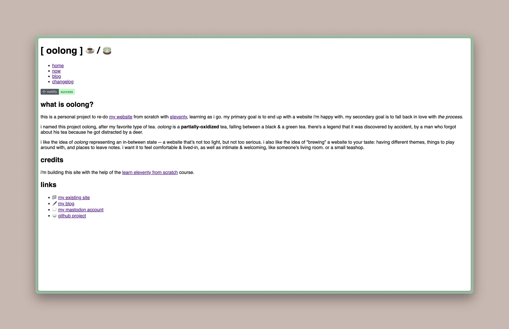
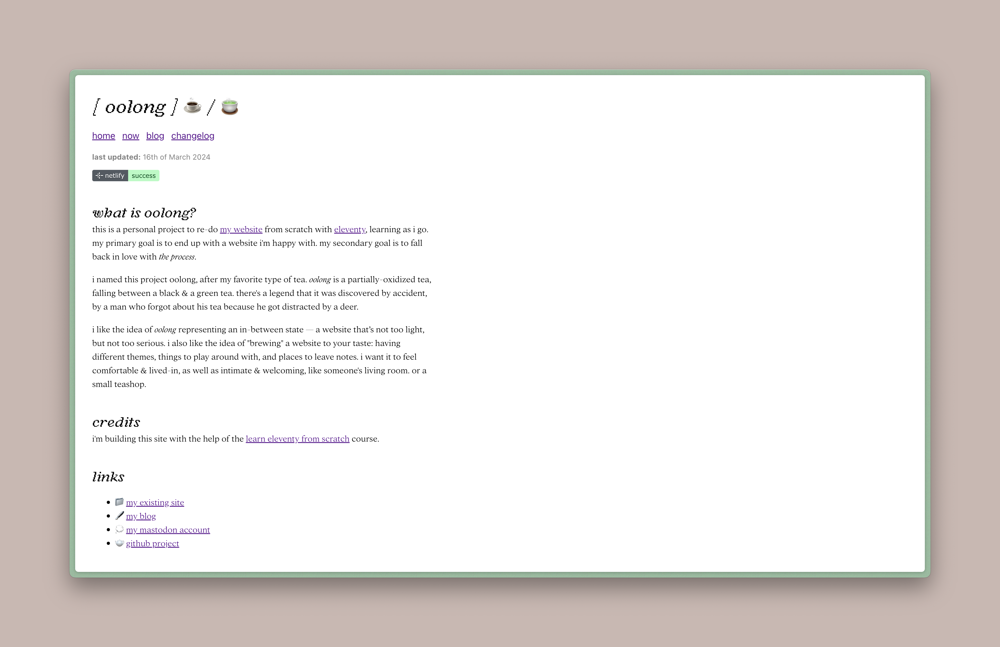

I did some other stuff too, but the fonts are the fun part. As mentioned in the changelog, I finally got around to sprucing up the place a little bit — I was getting tired of looking at a css-less website.

As the first step of that process, I treated myself to two Connary Fagen fonts that I’ve had stashed away in a folder for a while: Argent Pixel & Addington. Once I got those all set up, I stole Andy Bell’s css reset to get me started. And then I wrote some very lazy, scuffed css just to quickly get everything looking a little nicer.

I do have aspirations of really nice, clean, efficient scss files that are organized and easy to read. But I decided when I started this project that it wasn’t worth getting into the weeds with all that before I’ve had the chance to play around and actually figure out what I want the website to be. I’m still in the messy, experimental phase.
Oh — I also (as mentioned in the last post) got some more collections set up in Obsidian. So now I can make really quick updates to the /now page by adding & editing Obsidian files for books I’m reading, games I’m playing, and other things I’m doing.
Next, I think I want to set up individual pages for each item in those collections — each book, each game. And maybe a “shelf,” so I can also list the things I’ve already finished or haven’t started yet. And then maybe after that I’ll get around to writing better css.